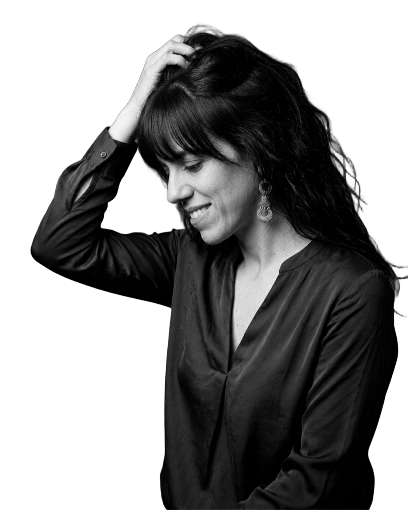
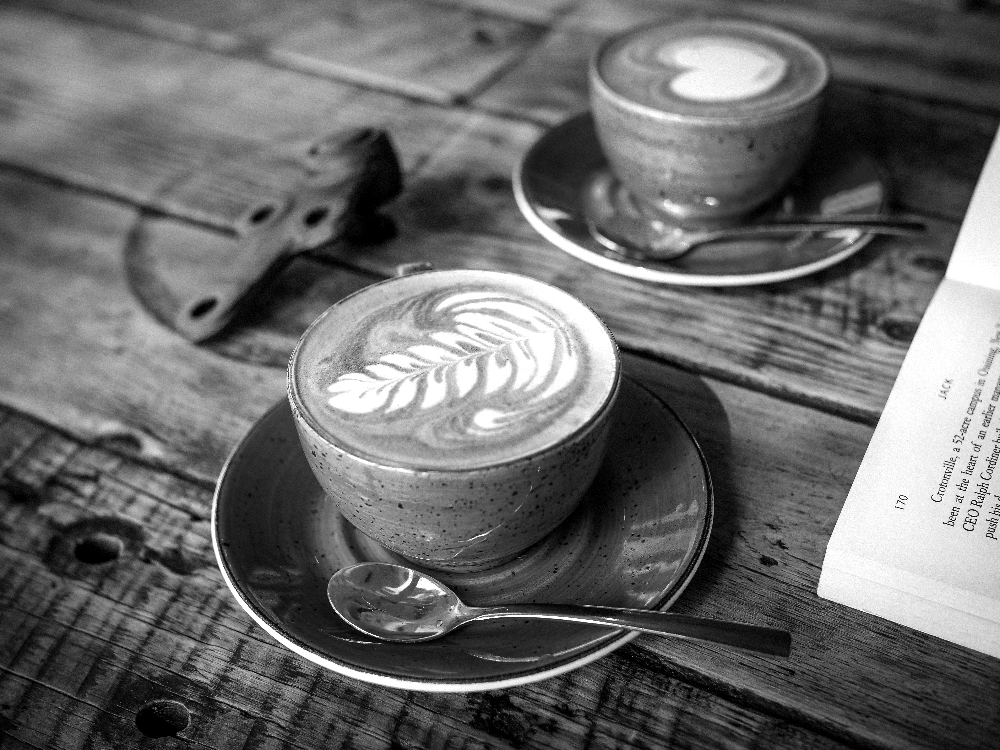

Vull una
oportunitat
per marcar la
diferència!
Soc gestora digital, instructora de fitness i monitora i guia de BTT. I saps què? No sabria escollir-ne només una! Em fascina crear, dinamitzar i veure com les coses prenen forma. L'energia i la motivació són el meu segell, i el somriure i la passió, la meva identitat. Tant en una reunió com en una classe o sobre la bici, sempre busco que cada experiència sigui única, autèntica i plena de força. Perquè al final, la diferència entre un dia qualsevol i un dia extraordinari està en com decideixes viure'l. I jo sempre trio viure'l amb intensitat!
Veure CV complet
Si has arribat fins aquí, potser és per curiositat, o potser perquè alguna cosa en mi t'ha cridat l'atenció. Sigui com sigui, només hi ha una manera de saber-ne més: trobant-nos i parlant. Res de discursos preparats ni formalismes pesats. Només un cafè, una estona compartida, una conversa autèntica i, qui sap, potser una d'aquelles trobades en les quals val la pena haver perdut una mica el temps. Tu poses el lloc i l'hora, jo porto l'energia i el somriure. Prenem aquest cafè? 😄
Contacta'm